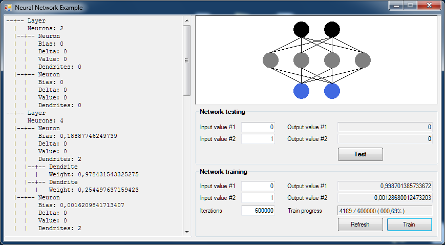

In this article (hopefully, the first of a small series), we'll see how to implement a neural network in Visual Basic .NET, i.e. a model capable of processing input data and adjust its internal mechanics to learn how to produce a desired result. We'll see more on this later. The present article will focus on generic definitions about neural networks and their behaviours, offering a simple implementation for the reader to test. In the final paragraph, we will code a small network capable of swapping two variables.
The term "neural network" is typically used as a reference to a network or circuit constituted by neurons. We can differentiate two types of neural networks: a) biological and b) artificial. Obviously, speaking about software development, we are here
referring to artificial ones, but those kind of implementations get their basic model and inspiration from their natural counterparts, so it can be useful to briefly consider the functioning of what we intend when we speak of biological neural networks.
Those are networks constituted by biological neurons, and they are typical of living creatures. The neurons/cells are interconnected into the peripheral nervous system or in the central one. In neurosciences, groups of neurons are identified by the
physiological function they perform.
Artificial networks are mathematical models, which could be implemented through an electronic medium, which mime the functioning of a biological network. Simply speaking, we will have a set of artificial neurons apt to solve a particular problem in
the field of artificial intelligence. Like a natural one, an artificial network could "learn", through time and trial, the nature of a problem, becoming more and more efficient in solving it.
After this simple premise, it should be obvious that in a network, being it natural or artificial, the entity known as "neuron" has a paramount importance, because it receive inputs, and is somewhat responsible of a correct data processing, which end in a result. Think about our brain: it's a wonderful supercomputer composed by 86*10^9 neurons (more or less). An amazing number of entities which constantly exchange and store informations, running on 10^14 synapses. Like we've said, artificial models are trying to capture and reproduce the basic functioning of a neuron, which is based on 3 main parts:
The soma executes a weighted sum of the input signals, checking if they exceed a certain limit. If they do, the neuron activates itself (resulting in a potential action), staying in a state of quiet otherwise. An artificial model tries to mimic those subparts, with the target of creating an array of interconnected entities capable of adjusting itself on the basis of received inputs, costantly checking the produced results against an expected situation.
Continue reading at: Basis of Neural Networks in Visual Basic .NET
